دکتر مسعود گوهری منش
دانشیار گروه مهندسی مکانیک — دانشگاه تربت حیدریه
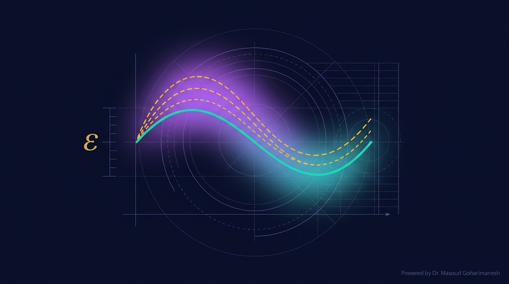
(Introduction to Perturbation Methods) — جلسه ۱۳
دکتر مسعود گوهری منش
دانشیار گروه مهندسی مکانیک — دانشگاه تربت حیدریه
در فاز ۳، با معادلات غیرخطی نانو انبرک آشنا شدید. هیچ راهحل دقیق بستهای برای این معادلات وجود ندارد. روش Perturbation به ما اجازه میدهد با فرض اینکه پارامتر ε کوچک است، جواب را بهصورت سری توانی بنویسیم و مرتبهبهمرتبه حل کنیم.
بیشتر معادلات واقعی در فیزیک و مهندسی، غیرخطی هستند و حل دقیق ندارند. Perturbation یکی از قدرتمندترین ابزارها برای حل تقریبی این معادلات است.
$x^2 + \epsilon x - 1 = 0$
ریشهها با تقریب
$y'' + \epsilon y^2 = 0$
معادلات غیرخطی فیزیک
$w'''' = f(w)$
نانو انبرک، تیر غیرخطی
Perturbation بر پایه یک ایده ساده استوار است: اگر یک پارامتر در مسئله کوچک باشد، جواب تقریباً همان جواب مسئله سادهتر است.
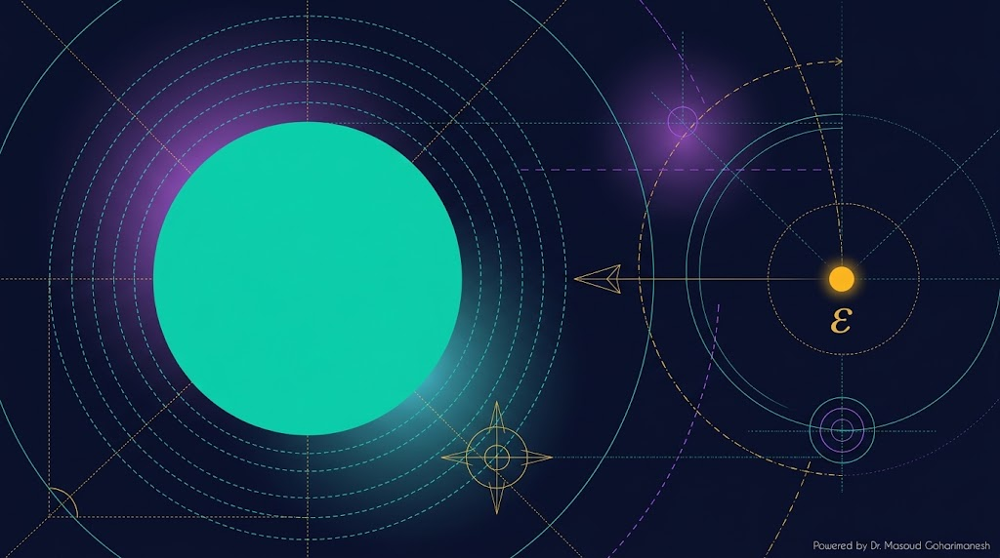
پارامتر $\epsilon$ باید بسیار کوچک باشد — مثل $\epsilon = 0.01$ یا $\epsilon = 0.1$. هرچه کوچکتر، دقت بیشتر.
مسئله بهصورت ترکیب دو بخش نوشته میشود:
$\mathcal{L}_0$ = عملگر ساده (حل دقیق دارد) | $\mathcal{N}$ = اختلال (غیرخطی)
برای مرتب کردن جملات بسط، از نمادهای **Big-O** و **Little-o** استفاده میکنیم.
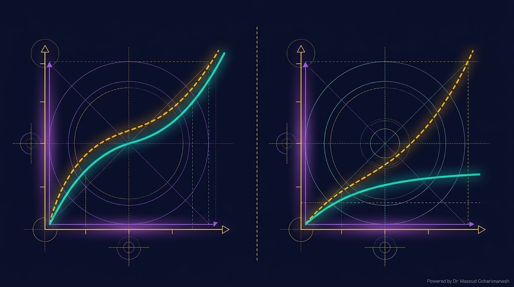
یعنی $f$ به همان سرعت یا سریعتر از $g$ به صفر میرود (در $\epsilon \to 0$).
مثال: $\epsilon^2 + \epsilon^3 = O(\epsilon^2)$
یعنی $f$ سریعتر از $g$ به صفر میرود.
مثال: $\epsilon^3 = o(\epsilon^2)$
فرض اصلی Perturbation این است که جواب مسئله را میتوان بهصورت **سری توانی** در $\epsilon$ نوشت:
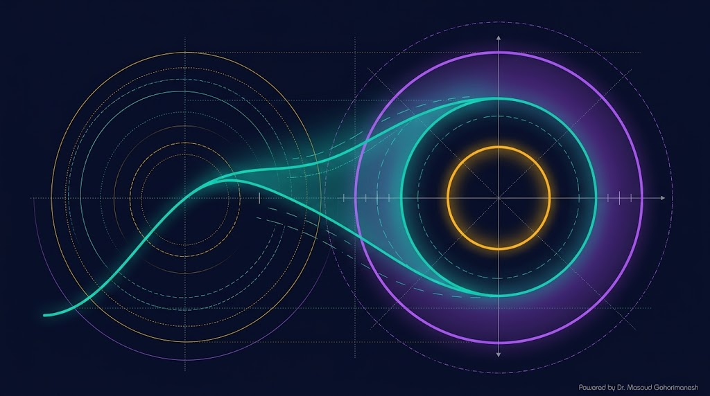
جواب مسئله بدون اختلال
اولین تصحیح
تصحیح دقیقتر
مرتبه صفر یعنی $\epsilon = 0$. مسئله به سادهترین شکل خود بازمیگردد و معمولاً **حل دقیق** دارد.
این مسئله ساده است و $x_0$ را میدهد.
تعداد جملات بسط را تغییر دهید و دقت تقریب را ببینید.
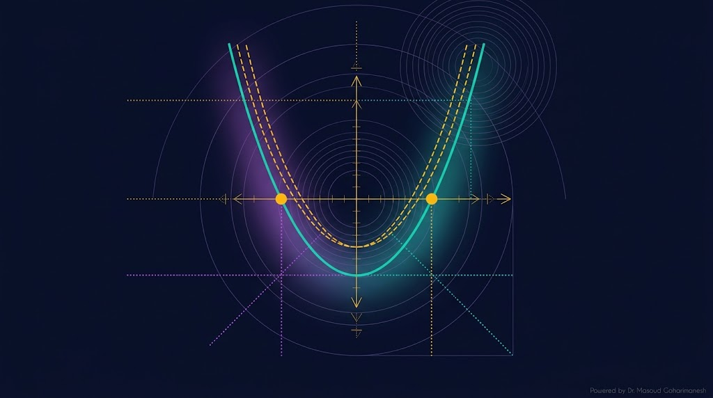
این معادله درجه ۲ حل دقیق دارد، اما برای آموزش Perturbation از آن استفاده میکنیم.
بسط:
جواب برای ریشه مثبت
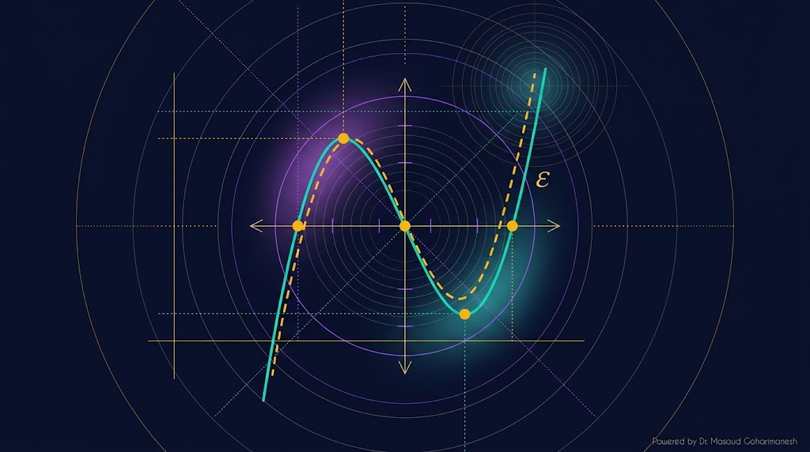
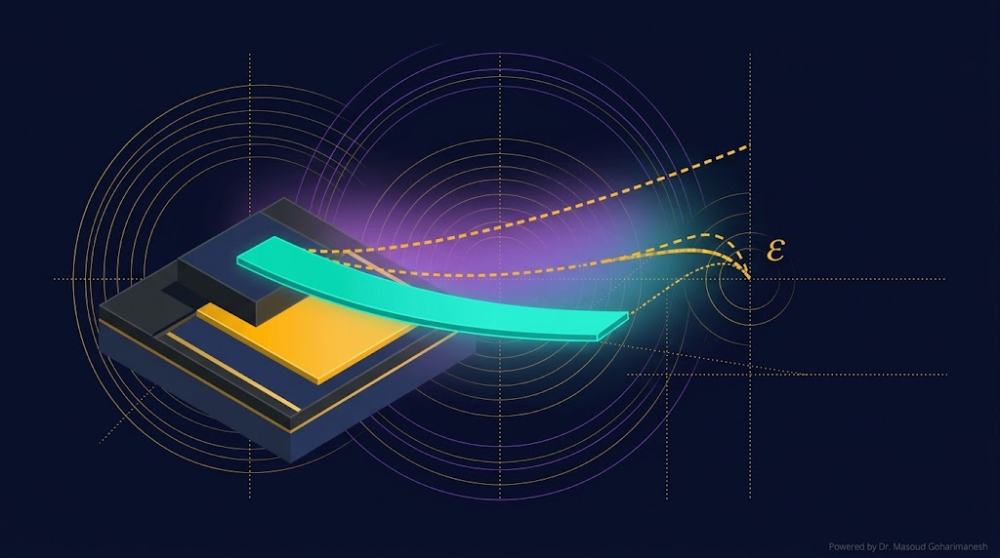
معادله تعادل استاتیک نانو انبرک را ساده کردهایم:
این معادله در واقع تعادل بین نیروی مکانیکی (خطی) و الکترواستاتیک (غیرخطی با $\epsilon \propto V^2$) را نشان میدهد.
جواب تقریبی خمش نانو انبرک
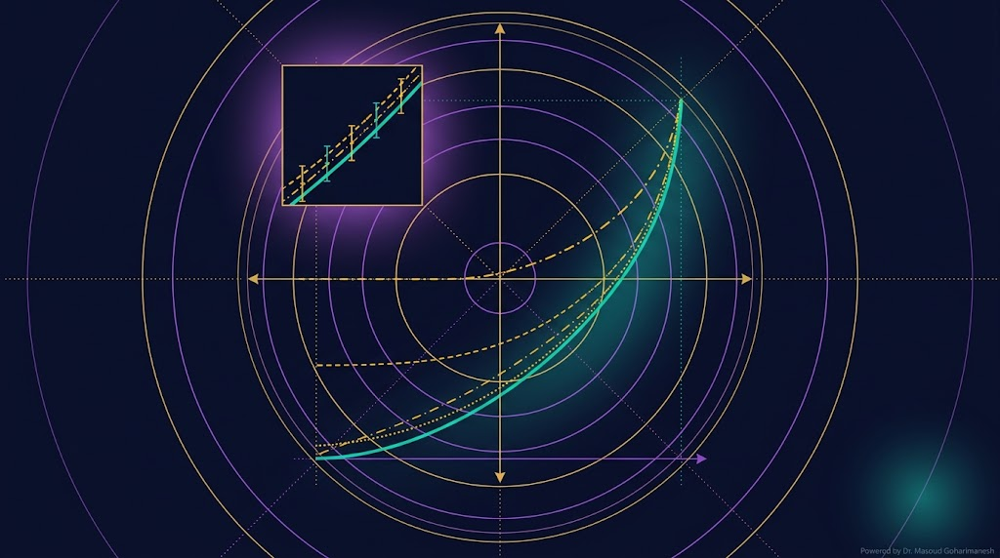
هرچه تعداد مراتب بسط بیشتر شود، خطا کاهش مییابد. اما همیشه یک خطای باقیمانده وجود دارد.
| مرتبه | مقدار x | خطا |
|---|---|---|
| دقیق | 0.9188 | — |
| مرتبه ۰ | 1.0000 | 8.1% |
| مرتبه ۱ | 0.9000 | 2.0% |
| مرتبه ۲ | 0.9200 | 0.1% |
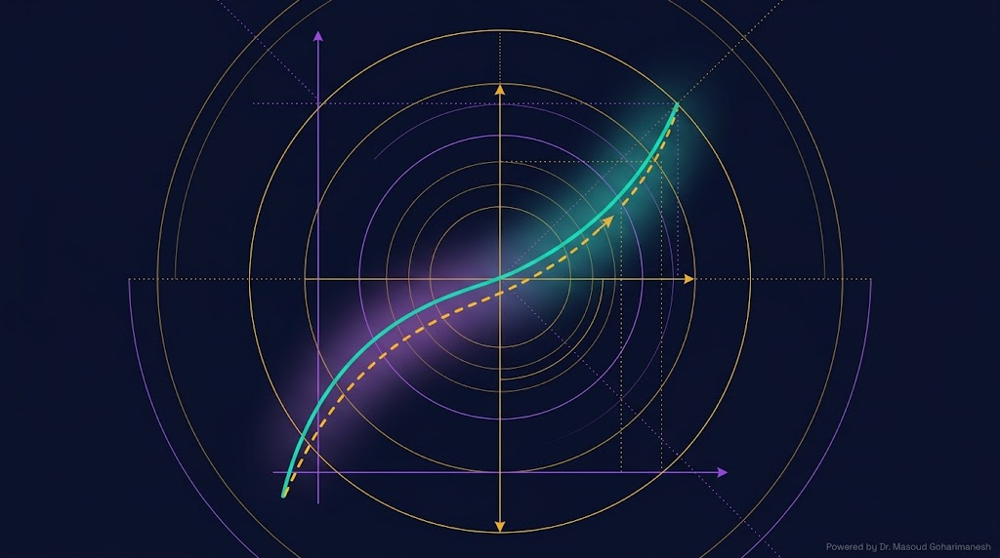
با شرط اولیه $y(0) = 0$. این معادله غیرخطی است و حل دقیق آن پیچیده است.
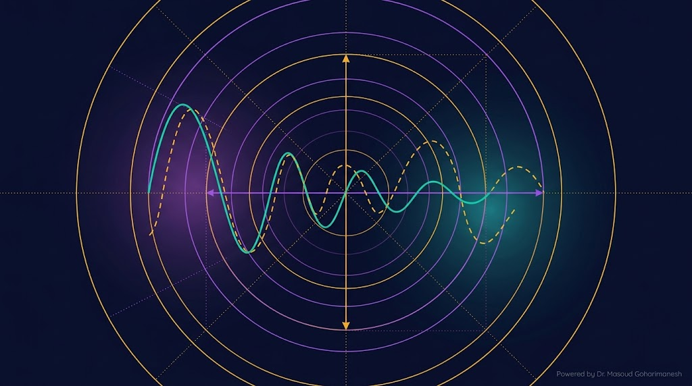
با شرایط اولیه $y(0)=1، y'(0)=0$. این معادله **اسیلاتور Duffing** است.
راهحل: روشهای چند مقیاسی (جلسه ۱۴)
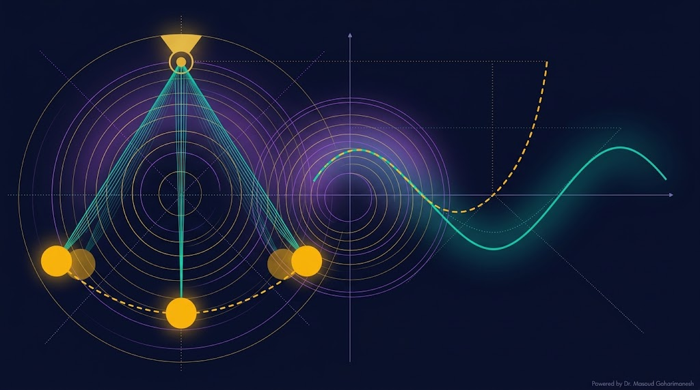
برای زوایای کوچک، $\sin\theta \approx \theta$ و آونگ ساده میشود. اما برای زوایای بزرگ، باید $\sin\theta$ را بسط دهیم:
با تعریف $\epsilon = \theta_0^2/6$ (که $\theta_0$ دامنه اولیه است):
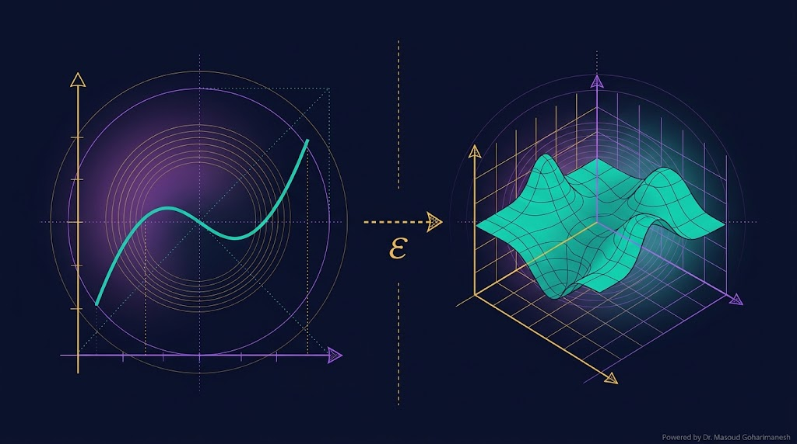
تا اینجا با معادلات جبری و ODE کار کردیم. حالا وارد **سطح سوم** میشویم: **معادلات دیفرانسیل جزئی (PDE)**.
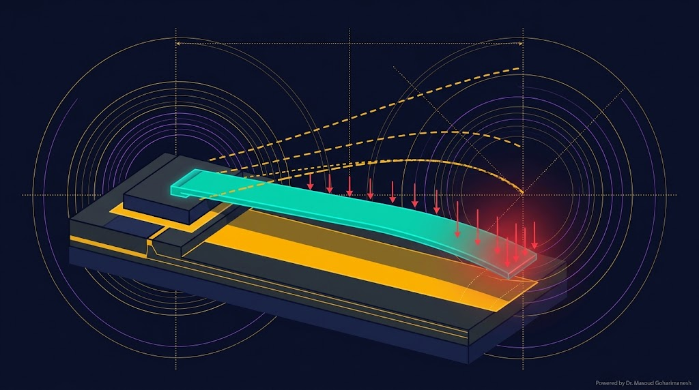
معادله بیبعد نانو انبرک:
با فرض $w$ کوچک، مخرجها را بسط میدهیم:
که $\epsilon = \alpha V^2 + \beta$
(تیر بدون بار الکترواستاتیک، خمش صفر)
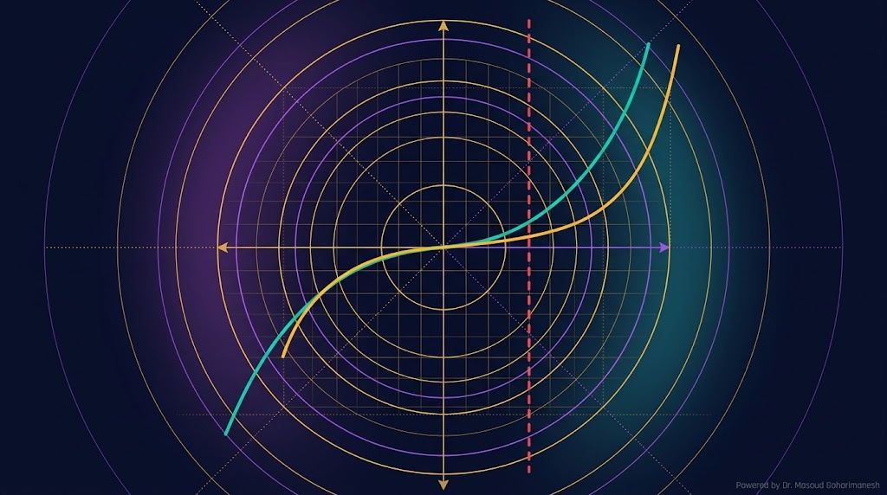
% === Perturbation برای معادله x^2 + eps*x - 1 = 0 === clear; clc; close all; eps_vec = linspace(0, 0.5, 50); x_exact = zeros(size(eps_vec)); x_pert0 = zeros(size(eps_vec)); x_pert1 = zeros(size(eps_vec)); x_pert2 = zeros(size(eps_vec)); for i = 1:length(eps_vec) eps = eps_vec(i); % حل دقیق (ریشه مثبت) x_exact(i) = (-eps + sqrt(eps^2 + 4))/2; % بسط Perturbation x_pert0(i) = 1; x_pert1(i) = 1 - 0.5*eps; x_pert2(i) = 1 - 0.5*eps - 0.125*eps^2; end % رسم نمودار figure('Color', 'w'); plot(eps_vec, x_exact, 'k-', 'LineWidth', 2.5); hold on; plot(eps_vec, x_pert0, '--', 'Color', '#00d4aa', 'LineWidth', 1.5); plot(eps_vec, x_pert1, '-.', 'Color', '#ffb700', 'LineWidth', 1.5); plot(eps_vec, x_pert2, ':', 'Color', '#a855f7', 'LineWidth', 2.5); xlabel('ε'); ylabel('x'); title('مقایسه Perturbation با حل دقیق'); legend('Exact', 'Order 0', 'Order 1', 'Order 2'); grid on;
# === Perturbation for x^2 + eps*x - 1 = 0 === import numpy as np import matplotlib.pyplot as plt eps_vec = np.linspace(0, 0.5, 50) # Exact solution (positive root) x_exact = (-eps_vec + np.sqrt(eps_vec**2 + 4)) / 2 # Perturbation expansion x_pert0 = np.ones_like(eps_vec) x_pert1 = 1 - 0.5 * eps_vec x_pert2 = 1 - 0.5 * eps_vec - 0.125 * eps_vec**2 plt.figure(figsize=(10, 6)) plt.plot(eps_vec, x_exact, 'k-', linewidth=2.5, label='Exact') plt.plot(eps_vec, x_pert0, '--', color='#00d4aa', linewidth=1.5, label='Order 0') plt.plot(eps_vec, x_pert1, '-.', color='#ffb700', linewidth=1.5, label='Order 1') plt.plot(eps_vec, x_pert2, ':', color='#a855f7', linewidth=2.5, label='Order 2') plt.xlabel('ε'); plt.ylabel('x') plt.title('Perturbation vs Exact Solution') plt.legend(); plt.grid(True, alpha=0.3) plt.savefig('perturbation_compare.png', dpi=600, bbox_inches='tight') plt.show()
ارسال تمرینها:
m.goharimanesh@gmail.com
Subject الزامی:
[Advanced Engineering Mathematics] HW13 - نام و نام خانوادگی - شماره دانشجویی
حالا با ابزار Perturbation آشنا شدید — آمادهی روشهای پیشرفتهتر باشید! 🌟
ابزار اصلی فاز ۴
روشهای چند مقیاسی و Lindstedt-Poincaré
دکتر مسعود گوهری منش
دانشیار گروه مهندسی مکانیک — دانشگاه تربت حیدریه
🇮🇷 با افتخار برای دانشجویان مکاترونیک 🇮🇷